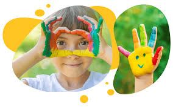
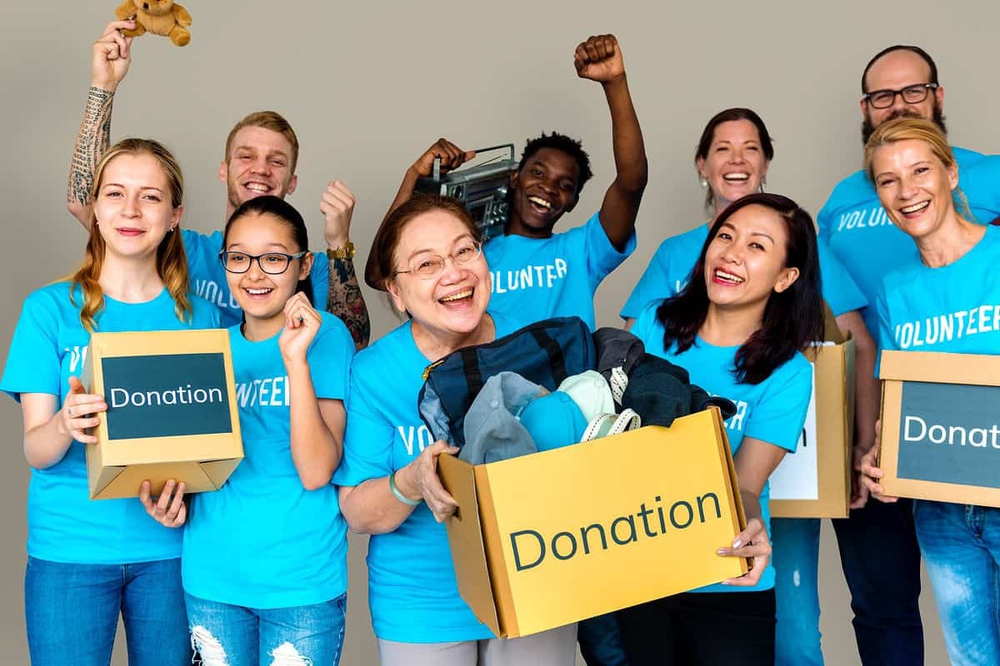
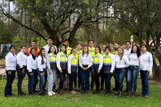
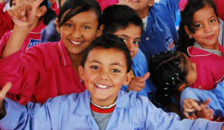
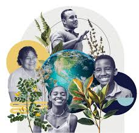

Programas y Proyectos Educativos

Educación
- Lectura y escritura
- Refuerzo escolar
- Alfabetización digital

Familias
- Escuela de padres
- Acompañamiento psicológico

Jóvenes
- Talleres vocacionales
- Liderazgo juvenil

Niños
- Ludoteca
- Dibujo y pintura

Comunidad
- Huertas urbanas
- Proyectos ambientales